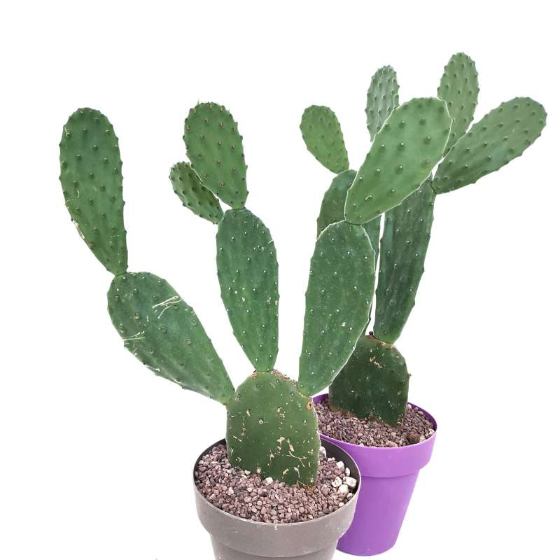

Si presenta come un arbusto succulento e sempreverde con fusto apparentemente legnoso e una chioma tondeggiante e disordinata.
|
|
|
| Origine: Sudafrica | |
| La Portulacaria afra è una pianta succulenta della famiglia Didiereaceae. Si presenta come un arbusto succulento e sempreverde con fusto apparentemente legnoso e una chioma tondeggiante e disordinata. |
|
| Prezzo: 5€ | |
| Quantità disponibile: 16 |

|
|
| Origine: Penisola arabica | |
| La Aloe vera è una pianta succulenta della famiglia delle Asphodelaceae. Questa pianta succulenta perenne a portamento arbustivo, può arrivare sino a un metro di alto. |
|
| Prezzo: 20€ | |
| Quantità disponibile: 32 |
|  | |
| Origine: Messico | |
| La Opuntia ficus-indica è una pianta succulenta arborescente appartenente alla famiglia delle Cactacee. Può raggiungere anche i 4-5 metri di altezza. |
|
| Prezzo: 80€ | |
| Quantità disponibile: 256 |

|
|
| Origine: Stati Uniti | |
| La Agave deserti è una pianta succulenta della famiglia delle Asparagaceae. Forma una rosetta di foglie carnose di colore verde-grigiastro, lunghe tra i 20 e i 70 cm e larghe tra i 4,5 e i 10 cm, con spine affilate lungo i bordi e alle estremità. | |
| Prezzo: 2.99€ | |
| Quantità disponibile: 1024 |